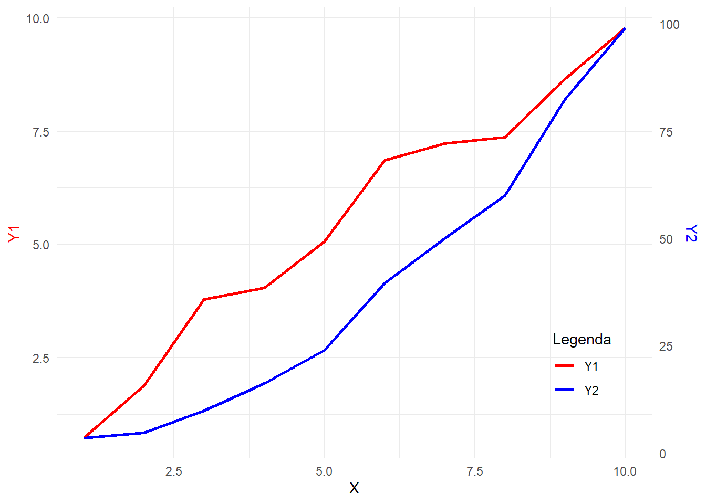

Código
set.seed(123)Neste documento, exploraremos como criar um gráfico com dois eixos y de diferentes escalas utilizando o pacote ggplot2 em R. Este modelo pode ser utilizado para visualizar duas séries de dados distintas no mesmo gráfico, facilitando a comparação e análise.
Antes de iniciar, certifique-se de que os pacotes necessários estão instalados e carregados.
Utilizamos set.seed(123) para garantir que os resultados possam ser reproduzidos.
set.seed(123)Geramos dados fictícios para X, Y1 e Y2.
X <- seq(1, 10, by = 1)
Y1 <- X + rnorm(length(X), mean = 0, sd = 0.5)
Y2 <- X^2 + rnorm(length(X), mean = 0, sd = 2)
# Criando o data frame
dados <- data.frame(X, Y1, Y2)Apresentamos os primeiros registros dos dados gerados.
kable(head(dados), caption = "Tabela 1: Primeiros registros dos dados") %>%
kable_styling(full_width = FALSE)| X | Y1 | Y2 |
|---|---|---|
| 1 | 0.7197622 | 3.448164 |
| 2 | 1.8849113 | 4.719628 |
| 3 | 3.7793542 | 9.801543 |
| 4 | 4.0352542 | 16.221365 |
| 5 | 5.0646439 | 23.888318 |
| 6 | 6.8575325 | 39.573826 |
Determinamos os valores mínimos e máximos de Y1 e Y2 para calcular o fator de escala e o deslocamento necessários.
minY1 <- min(dados$Y1)
maxY1 <- max(dados$Y1)
minY2 <- min(dados$Y2)
maxY2 <- max(dados$Y2)
# Calculando fator de escala e deslocamento
scale_factor <- (maxY1 - minY1) / (maxY2 - minY2)
shift <- minY1 - minY2 * scale_factorTransformamos Y2 para alinhá-lo com a escala de Y1.
dados$Y2_scaled <- dados$Y2 * scale_factor + shiftUtilizamos o ggplot2 para criar o gráfico, incorporando os ajustes necessários para os eixos y primário e secundário.
p <- ggplot(dados, aes(x = X)) +
# Gráfico de Y1
geom_line(aes(y = Y1, color = "Y1"), size = 1) +
# Gráfico de Y2 escalado
geom_line(aes(y = Y2_scaled, color = "Y2"), size = 1) +
# Configurando os eixos y
scale_y_continuous(
name = "Y1",
limits = c(minY1, maxY1),
sec.axis = sec_axis(
transform = ~ (. - shift) / scale_factor,
name = "Y2"
)
) +
# Ajustando cores e legenda
scale_color_manual(
name = "Legenda",
values = c("Y1" = "red", "Y2" = "blue")
) +
# Personalizando o tema
labs(x = "X", y = "Y1") +
theme_minimal() +
theme(
axis.title.y.left = element_text(color = "red"),
axis.title.y.right = element_text(color = "blue"),
legend.position = c(0.82, 0.30),
legend.justification = c(0,1)
)
# Exibindo o gráfico
print(p)
Criamos duas séries de dados:
X adicionada de um ruído normal.X adicionada de um ruído normal.Para plotar ambas as séries no mesmo gráfico, escalamos Y2 para que corresponda à escala de Y1. Isso é feito através de uma transformação linear utilizando o fator de escala e o deslocamento calculados.
geom_line para plotar Y1 e Y2_scaled.scale_y_continuous define o eixo y primário e sec_axis configura o eixo y secundário com a transformação inversa.scale_color_manual personaliza as cores das linhas e da legenda.theme_minimal é utilizado para um visual clean, e ajustes adicionais são feitos nos títulos dos eixos e na posição da legenda.Este modelo demonstra como visualizar duas séries de dados com escalas diferentes em um único gráfico, facilitando comparações e análises. A abordagem pode ser adaptada para diferentes conjuntos de dados e necessidades específicas.